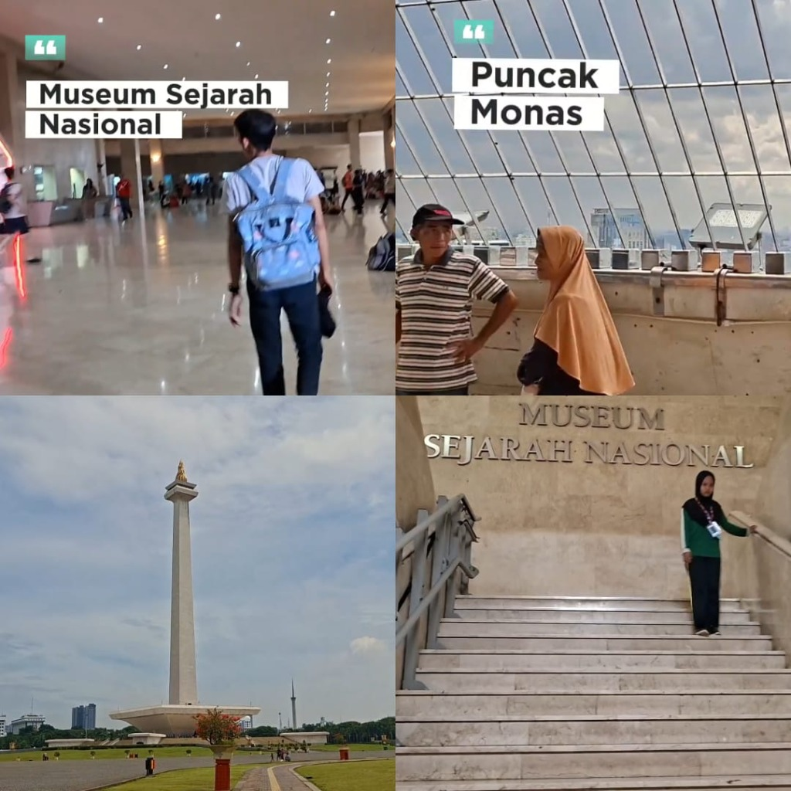
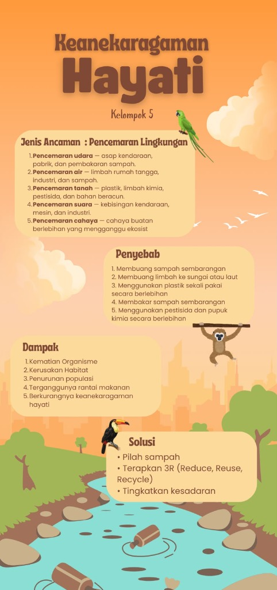
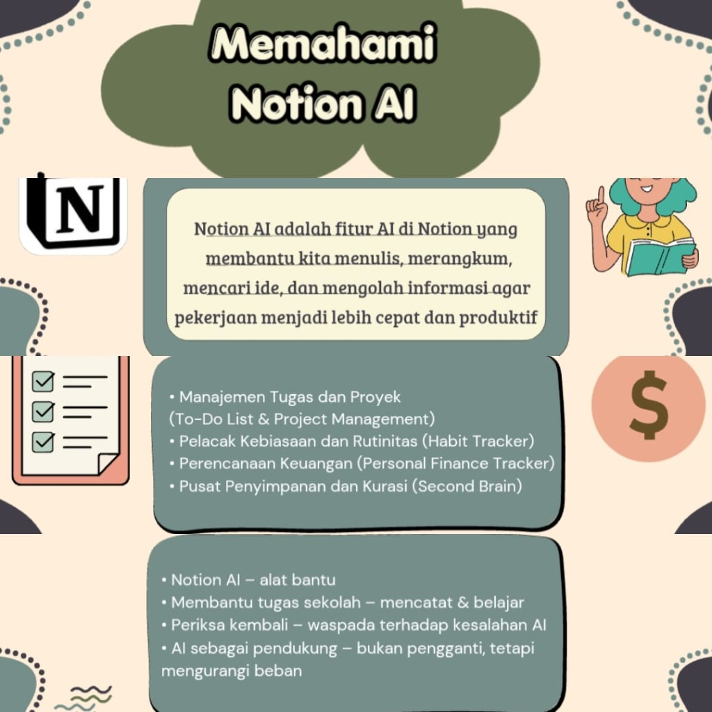
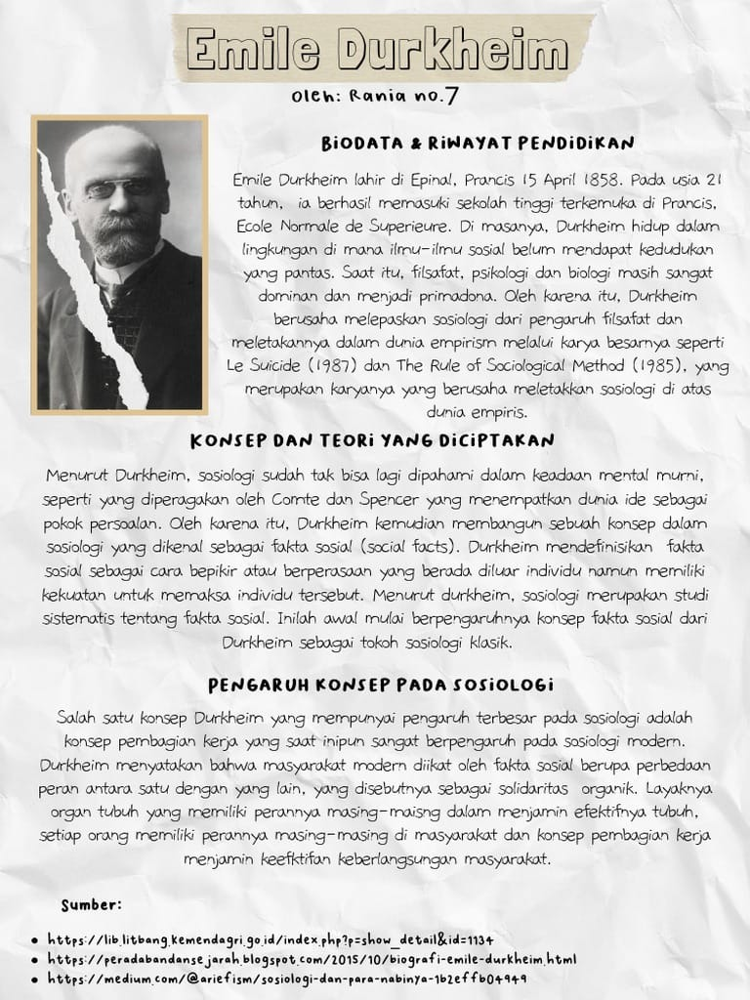
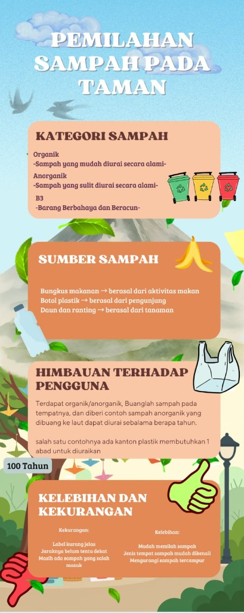

Proyek Video Edukatif Monas
Video edukasi seputar sejarah perjuangan kemerdekaan dan arsitektur Monumen Nasional Jakarta bersama kelompok.
Video Editing
Sejarah
Kerja Sama
Saya siswa SMA yang suka mencoba hal-hal baru di dunia teknologi—terutama AI, desain visual, dan video editing. Masih pemula dalam coding, tapi selalu antusias membuat karya nyata untuk tugas sekolah dan terus belajar untuk masa depan.
Berikut adalah 5 proyek nyata yang pernah saya kerjakan untuk tugas sekolah, baik secara kelompok maupun mandiri. Klik proyek untuk melihat peran saya, alat yang digunakan, hasil karya asli, dan kuis interaktifnya.

Video edukasi seputar sejarah perjuangan kemerdekaan dan arsitektur Monumen Nasional Jakarta bersama kelompok.

Infografis visual tentang jenis pencemaran lingkungan, dampak bagi alam, dan solusi nyata dengan prinsip 3R.

Pemaparan materi tentang bagaimana Notion AI dapat membantu siswa mencatat, merangkum materi, dan mengelola jadwal.

Penyusunan biografi tokoh sosiologi klasik dan konsep fakta sosial yang ditulis serta dihias langsung di media karton.

Karya produk dari pemanfaatan koran dan karton bekas ramah lingkungan yang dirakit bersama kelompok.
Perkenalan singkat mengenai identitas saya, motivasi membuat portfolio ini, dan hal-hal yang sedang saya pelajari.
Halo! Saya Muhammad Ad Dairabiy, saat ini bersekolah di SMA Negeri 70 Jakarta di kelas X-D (sebelumnya saya lulusan dari SMPN 68 Jakarta Selatan).
Saya adalah orang yang suka belajar dan penasaran mencoba berbagai hal baru, terutama yang berhubungan dengan teknologi dan kecerdasan buatan (AI). Di sekolah maupun waktu luang, saya suka mendesain visual, mengedit video, dan saat ini sedang mulai belajar dasar-dasar pemrograman/coding.
Saya masih seorang pemula dan belum memiliki keahlian profesional, tapi saya menikmati proses belajar langkah demi langkah dan mengerjakan proyek-proyek tugas sekolah sebaik mungkin.
"Awalnya portfolio ini dibuat karena tugas dari ekstrakurikuler Klub Robotik. Tapi setelah dipikir-pikir, saya merasa kemampuan membuat dan mengelola portfolio akan sangat berguna saat kuliah maupun ketika bekerja nanti."
Karena itu, saya ingin mulai belajar membuat portfolio dari sekarang supaya ke depannya bisa terus mengembangkan diri dan menghasilkan karya yang lebih baik lagi.
Bidang teknologi yang paling membuat saya tertarik dan aktivitas kreatif yang sering saya lakukan.
Saya sangat tertarik melihat bagaimana AI bisa membantu manusia dalam belajar, mencari ide, merangkum materi, dan berbagai aktivitas harian.
Minat TerbesarSuka mengeksplorasi sistem operasi komputer, software produktivitas, dan mengikuti tren inovasi teknologi digital terbaru.
Eksplorasi RutinSuka membuat tampilan visual tugas sekolah, infografis, dan tata letak materi agar lebih rapi, jelas, dan menarik dipandang.
KreativitasSuka mengolah klip video dan audio untuk kebutuhan tugas sekolah, seperti pembuatan dokumenter dan video presentasi kelompok.
Praktik Tugas"Saya suka mencoba membuat visual untuk tugas dan proyek sekolah."
"Saya suka mengedit video, terutama saat ada proyek sekolah yang membutuhkan video."
"Saya juga suka mendengarkan musik saat santai atau sedang belajar."
Saya mengelompokkan kemampuan saya secara realistis berdasarkan tahap perkembangan (bukan persentase atau klaim expert). Klik pada kartu kemampuan untuk melihat bagaimana saya menerapkannya.
Klik atau arahkan kursor pada salah satu kartu kemampuan di atas untuk melihat detail penggunaannya dalam proyek saya.
Tahapan proses belajar saya dari bangku SMP hingga mengeksplorasi dunia teknologi di SMA. Klik setiap tahapan untuk melihat kisahnya.
Di bangku SMPN 68 Jakarta Selatan, rasa penasaran saya mulai tumbuh melalui kegiatan ekstrakurikuler Klub IPA. Di sana saya belajar mengamati fenomena sekitar, melatih logika dasar, dan mulai sering menggunakan komputer untuk tugas sekolah.
"Saya belum tahu persis akan menjadi apa di masa depan. Untuk sekarang, saya ingin mencoba berbagai hal yang berhubungan dengan teknologi dan melihat bidang mana yang paling cocok untuk saya."
Keterlibatan saya dalam kegiatan ekstrakurikuler sekolah yang menjadi wadah belajar dan eksplorasi.
Di SMA Negeri 70 Jakarta, saya mengikuti ekstrakurikuler Klub Robotik. Melalui ekskul inilah saya mendapatkan tugas untuk membuat website portfolio ini, yang kemudian memotivasi saya untuk belajar coding dan membangun wadah dokumentasi karya pribadi.
Saat di jenjang SMP, saya aktif mengikuti kegiatan eksperimen sains dan observasi fenomena alam di Klub IPA. Kegiatan ini membantu melatih daya analisis dan cara berpikir logis saya sejak dini.
Tertarik berdiskusi seputar tugas sekolah, kolaborasi proyek, atau sekadar berbagi cerita seputar dunia teknologi? Silakan hubungi saya melalui informasi di bawah.
Isi formulir di bawah untuk mengirim pesan langsung kepada saya.